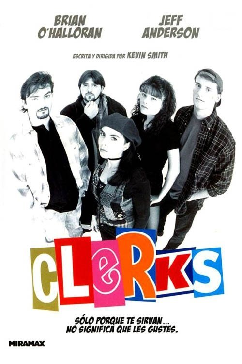

Clerks (1994)
Sinopsis Rápida
Dos jóvenes empleados de una tienda de conveniencia en Nueva Jersey enfrentan un día infernal lleno de clientes extravagantes, dilemas existenciales y mucho humor negro. ¿Sobrevivirán a la jornada o sucumbirán al tedio y el absurdo?
Sinopsis Detallada
Clerks es una joya del cine independiente que retrata con crudeza y humor la vida de Dante y Randal, dos amigos que trabajan en una tienda de cómics y pasan el día discutiendo de todo, desde Star Wars hasta la vida misma. Kevin Smith construye una historia hilarante y reflexiva donde los personajes son tan memorables como sus diálogos agudos y sarcásticos. La película explora temas como el aburrimiento, las relaciones, y la búsqueda de sentido en una vida aparentemente insignificante, todo envuelto en un estilo irreverente y honesto que marcó una época. La improvisación de algunos diálogos y la atmósfera realista contribuyen a la autenticidad de una historia que es, a la vez, cómica y profundamente humana.
¿Por qué tenés que verla?
- Un retrato realista y divertido de la vida cotidiana y las frustraciones de la juventud.
- El estilo distintivo de Kevin Smith, con diálogos ingeniosos y personajes memorables.
- Un clásico del cine indie que influyó en generaciones de cineastas y sigue siendo relevante hoy en día.
- Una película de bajo presupuesto que logró un gran impacto cultural.
Idea Extra
Análisis comparativo de Clerks con Jay y Silent Bob, explorando la evolución de los personajes y el universo creado por Kevin Smith.
{{CONTENIDO_RELACIONADO}}